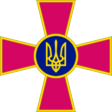

 Збро́йні си́ли Украї́ни — військове формування, на яке відповідно до Конституції України покладаються завдання з оборони України, захист її суверенітету, територіальної цілісності та недоторканності. Структурно поділене на 3 види та 2 окремі роди військ/сил. Збройні сили України забезпечують стримування збройної агресії проти України та відсіч їй, охорону повітряного простору держави та підводного простору у межах територіального моря України, а також беруть участь у заходах, спрямованих на боротьбу з тероризмом. З'єднання, військові частини і підрозділи Збройних сил України відповідно до закону можуть залучатися до здійснення заходів правового режиму воєнного і надзвичайного стану, боротьби з тероризмом і піратством, посилення охорони державного кордону, суверенних прав України в її виключній (морській) економічній зоні і континентального шельфу України та їх правового оформлення, протидії незаконним перевезенням зброї, наркотичних засобів та психотропних речовин, ліквідації надзвичайних ситуацій природного та техногенного характеру, надання військової допомоги іншим державам, а також брати участь у міжнародному військовому співробітництві, міжнародних антитерористичних, антипіратських та інших міжнародних операціях з підтримання миру і безпеки на підставі міжнародних договорів України та в порядку і на умовах, визначених законодавством України. Лондонський Міжнародний інститут стратегічних досліджень у своєму виданні The Military Balance 2018 року зазначає, що Збройні сили України налічують 204000 військовослужбовців, з яких 145000 у Сухопутних військах, 6000 у ВМС, 45000 у Повітряних силах, 8000 у Десантно-штурмових військах, невідома кількість у Силах Спеціальних операцій. Сухопутні війська мають на озброєнні 832 танків, 1087 бойових машин піхоти і 548 розвідувальних бронемашин, 1737 одиниць артилерії, 90 тактичних ракетних комплексів, і 35 ударних гелікоптерів. Військово-морські сили мають на озброєнні 1 фрегат і 10 військових суден меншого класу. Українська авіація налічує 71 винищувач, 14 бомбардувальників, 31 штурмовик, 30 транспортних літаків.